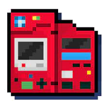

Note: Music, Misc, and HTML5/Web from the Games section are dead links or don't lead to anywhere.
Bunnies are your friend. They control the music.
If it doesn't automatically start playing, then you have entered the website by typing in the link instead of navigating from somewhere else(something I need to fix so it works all of the time).
Pages scroll even if you can't see a scrollbar
Here are the github commits if you are interested in the code changes
You'll also need your own files to play on the emulator which you can source from here. NDS and N64 perform badly.
Considering you're probably a beta tester, this links to a feature I'd like to implement for the dialogue soon
I've already replaced the voice samples from the original code credited to henryishuman with mine meaning that the audio recorded is my voice actually so go ham or something
Click the Pokedex to view the changelogs and the other to view dialogue again.
 -->
Changelogs
6/22/22 5:18PM
Version 0.0.2
Prealpha
Not much changes since I'm new to this but I'll slowly make progress one feature at a time.
-Include changelogs on the home page that can toggle a slide in page
-Include test descriptions for the different RPGMaker Games by hovering and changed a few backgrounds
-Modified home page introduction text and shortened notes text
-Changed colors of links to turquoise by default and yellow when active
-Cleaned up music player graphics(now available through all of the website), added a shuffle feature, and adjusted variables for future development purposes
-Add basic dialogue box to title screen and click to fade
6/20/22 10:32PM
Version 0.0.1
Prealpha
As it's the start of the website, there's nothing here to really say besides have fun with the base features.
-Home page including 2 sides and a introduction as well as some notes.
-Navigation bar layout for the 4 main website categories
-Games page with an animated background, 2 working links and a dead link to an emulator, RPGMaker page, and HTML page respectively.
-RPGMaker page that contains working links to Yume Nikki, Off, and Ib with a changing background when hovering.
-Basic automatic music player for each page indicated with a bunny sprite